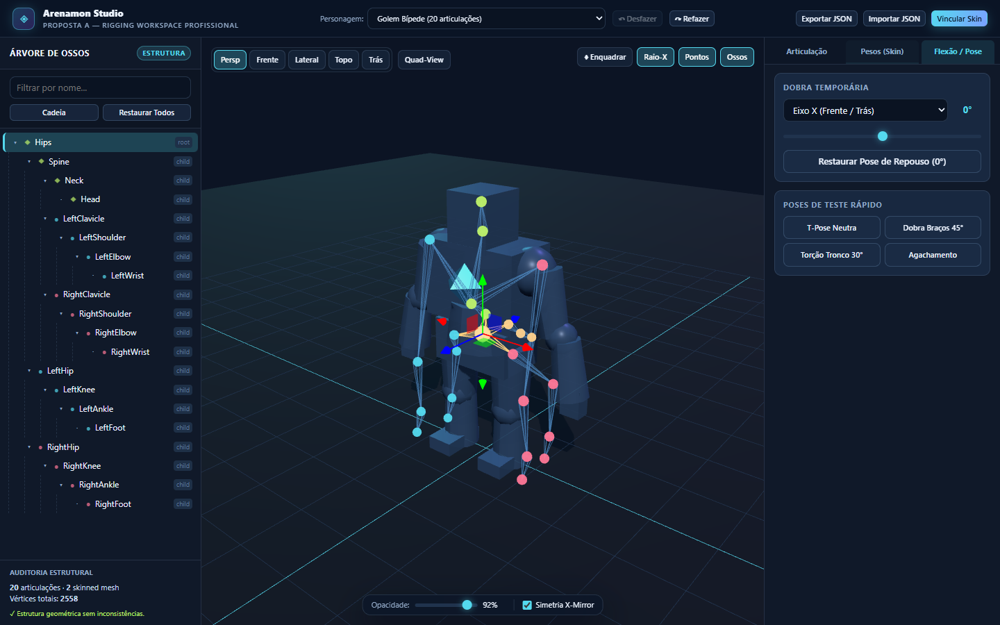
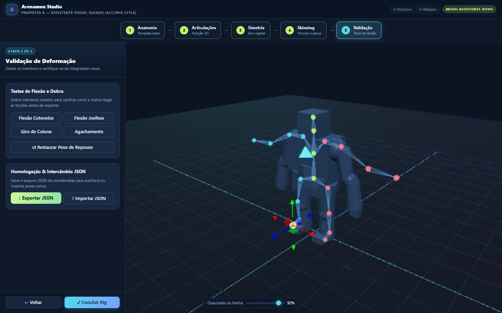
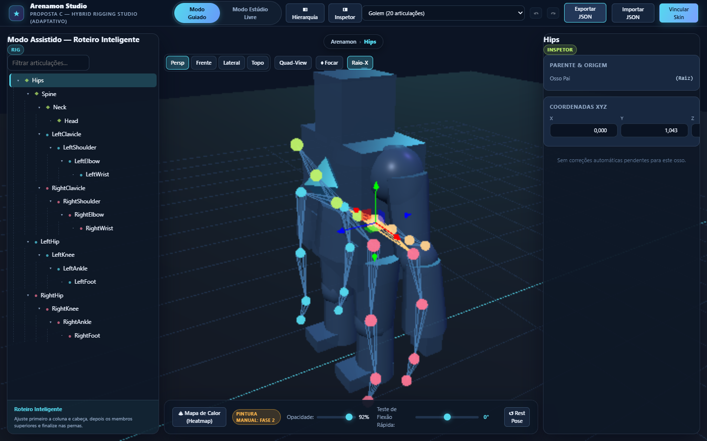

Acesso rápido em um clique a todos os módulos, protótipos jogáveis, estúdios de animação e rigging, laboratórios e relatórios de verificação do projeto Arenamon.
O jogo principal oficial do Arenamon é o Combat Lab (prototypes/combat-lab/dist/arenamon-combate-laboratorio.html). Inclui suporte a personagens GLB do Studio, X (Tackle) e C (Esquiva) separados, Moves especiais com Power Level (Reflect & Psyshock), VFX 3D sólidos, IA tática de 5 fases, Modo Arena tela cheia e interface Bento Zero-Scroll.
Estúdio completo para manipulação de animações e rigging. Inclui timeline interativa, recorte temporal não-destrutivo com interpolação, controle de velocidade e fechamento de loops, extração de root motion in-place e eventos de combate.
arenamonRig intactos.O núcleo de Rigging do Animation Studio é desenvolvido em parceria com o Codex. Todas as operações matemáticas de cálculo de matrizes inversas de bind e normalização de pesos seguem rigorosos critérios de estabilidade.

Inspirada em softwares 3D consagrados (Blender, Maya). Interface técnica completa com Quad-View (3 vistas ortográficas + 1 perspectiva), manipulador 3D (Gizmo de translação) e árvore de hierarquia com filtros anatômicos.
Abrir Proposta A
Inspirada na facilidade do AccuRIG. Processo passo a passo em 5 etapas guiadas, incluindo Paper Doll 2D ilustrativo, posicionamento assistido de marcadores e auto-bind direto para criadores não-técnicos.
Abrir Proposta B
Canvas 3D amplo e desobstruído com alternância instantânea entre Modo Guiado (passo a passo para montagem) e Modo Livre (ajuste fino com manipulador), barras contextuais e linhagem anatômica (breadcrumbs).
Abrir Proposta C
O Combat Lab é o próprio jogo principal do Arenamon (arenamon-jogavel.html em prototypes/game/ foi descontinuado como protótipo inicial legado). Acesse abaixo os documentos técnicos de Moves, VFX sólidos, calibração e o painel externo de relatórios.
Visualizador inicial seguro do projeto: dois blocos sólidos (jogador azul, inimigo vermelho), iluminação de palco e câmera orbital. Totalmente seguro para distribuição pública.
Abrir Visualizador BaseFerramenta para importação de malhas 3D sintéticas ou de teste, descarte de texturas para modo unlit (flat colors) e exportação de GLB limpo sem assets proprietários.
Abrir ImportadorLaboratório local de diagnóstico de deformação de vértices e esqueleto (abertura de mandíbula, expansão de bochechas e agachamento profundo).
Abrir DiagnósticoConsulte o catálogo interativo completo contendo o status de execução de mais de 110 cenários mecânicos, testes de física, locomoção, timeline do studio, núcleo técnico do Codex, interoperabilidade v2 e capturas de tela das evidências.
↔ Squash & Stretch do Tackle — controles, auditoria e testes